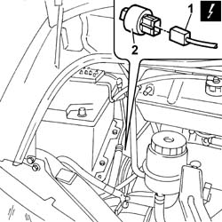

5040B14 AIR CONDITIONER SYSTEM MULTI-LEVEL PRESSURE SWITCH - R+R
- Path
- Procedures > 50 AUXILIARY UNITS > 5040 AIR CONDITIONING CASING AND COMPONENTS > 5040B SYSTEM SAFETY CHECK DEVICES > 5040B14 AIR CONDITIONER SYSTEM MULTI-LEVEL PRESSURE SWITCH - R+R
- Kind
- repair procedure (removal / refitting; the operation number is the code)
- Applies to
- all engines; all production periods
- Interactive page
- https://sloeber94.github.io/elrnDB-fDct/en/#/244001282
Applies to: all engines; all production periods
 Removing
Removing
 Refitting
Refitting- Disconnect the negative battery terminal.
1. Disconnect the electrical connector for the multi-stage pressure switch.
 | Description | Connector |
|---|---|---|
1 | 4 stage pressure switch | K010 |
2. Undo the multi-stage pressure switch.

Applies to: all engines; all production periods
Refitting
Removing- Secure the multi-stage pressure switch to the pipe.
- Connect the electrical connector for the multi-stage pressure switch.
| Description | Connector |
|---|---|---|
. | 4 stage pressure switch | K010 |
- Connect the negative battery terminal.